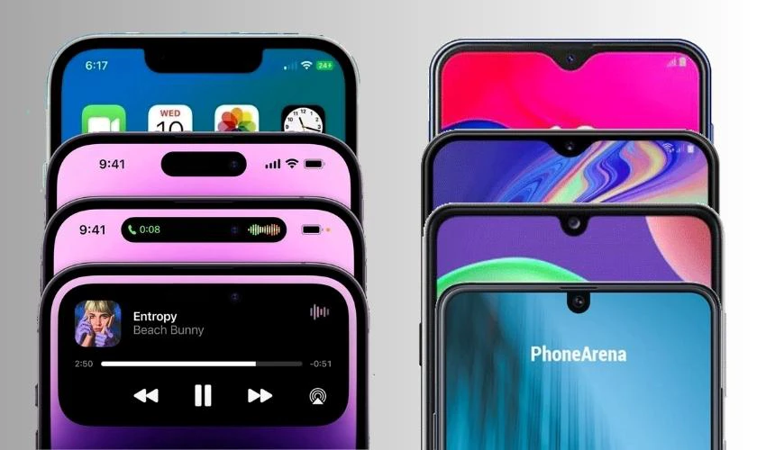
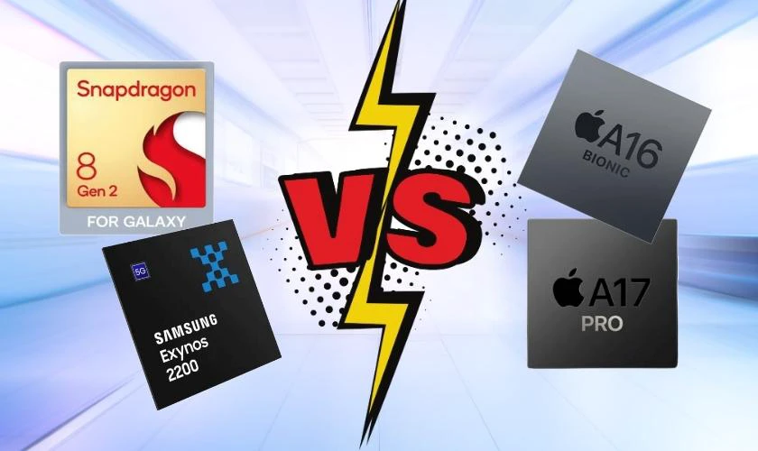
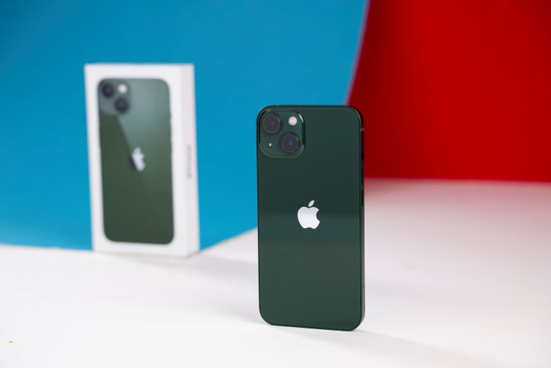
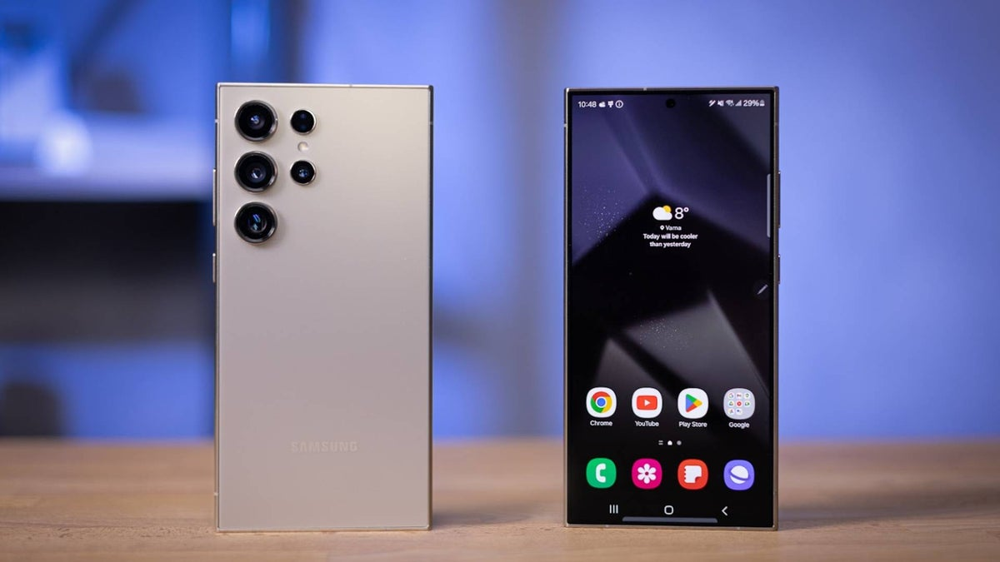
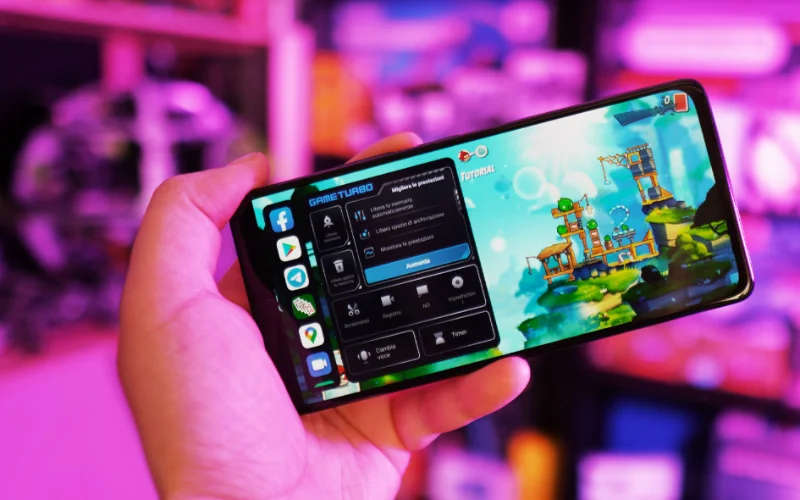
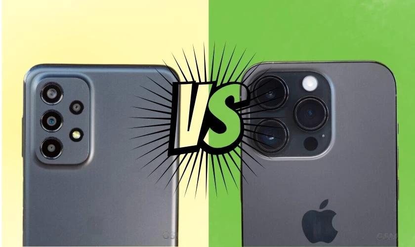
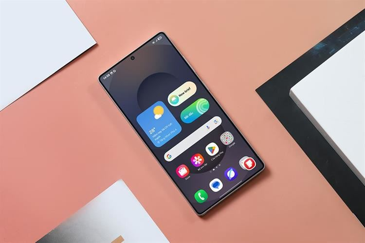
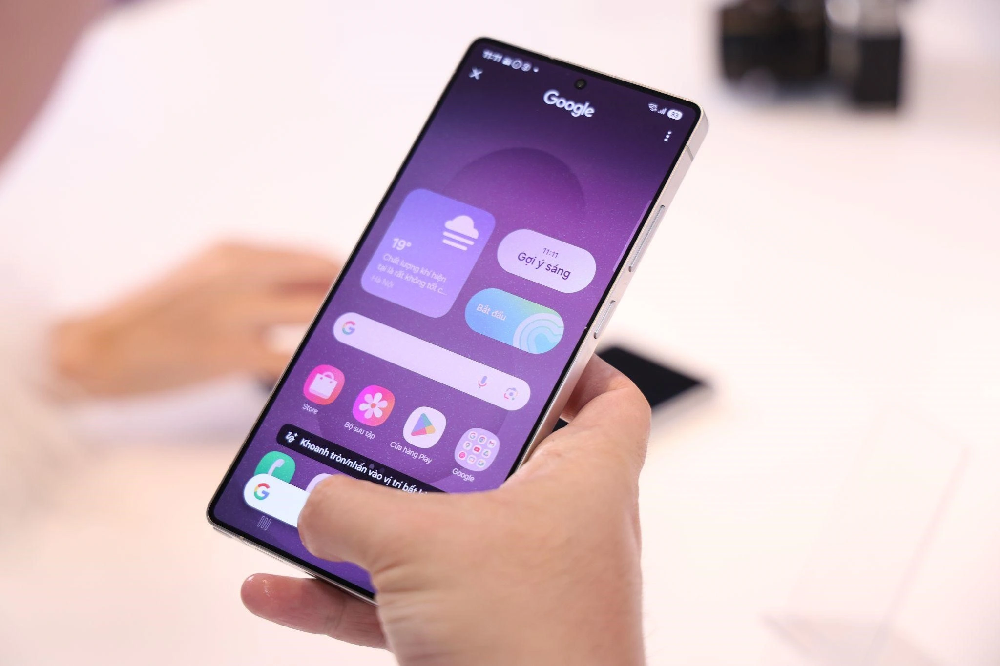

So sánh iPhone và Samsung: Điện thoại nào đáng sở hữu?
Trong bài viết này chúng ta cùng so sánh xem Iphone và Samsung sẽ là chiếc điện thoại nào đáng sở hửu nhất.
iPhone và Samsung để hình dung được cái nào bền hơn, tốt hơn, chụp hình đẹp hơn. Bằng việc so sánh này, chúng ta có thể dễ dàng lựa chọn được điện thoại phù hợp với nhu cầu của mình.
Tổng quan về Iphone và Samsung
2 hãng điện thoại Samsung và Apple hàng năm luôn tung ra các siêu phẩm ấn tượng đi kèm với các công nghệ được xem là hiện đại nhất toàn cầu về lĩnh vực này. Tuy nhiên, mỗi nhà sản xuất có một hướng đi riêng khác nhau. Samsung chú trọng vào kinh doanh các thiết bị đủ mọi phân khúc từ thấp đến cao. Trong khi đó, những sản phẩm chủ lực của Apple đa phần là thuộc dòng cao cấp..
Nếu bạn là người thường xuyên theo dõi thị trường điện thoại, bạn sẽ dễ dàng nhận ra cả Apple và Samsung đều có hướng phát triển khác nhau nên các sản phẩm sẽ có sự khác biệt, rõ rệt nhất là về thiết kế vẻ ngoài.
về thiết kế, cả hai hãng đều có hướng phát triển khác nhau ứng với phong cách riêng của mình, vì vậy phân khúc khách hàng của cả hai cũng không giống nhau. Bạn có thể lựa chọn điện thoại thông qua thiết kế tùy vào sở thích của bạn.
So sánh màn hình iPhone và Samsung: Cái nào tốt hơn?
iPhone có màn hình OLED công nghệ IPS, hình ảnh chân thực, độ sáng cực đại 2500 nits cao hơn Samsung. Samsung sử dụng màn hình AMOLED công nghệ Super AMOLED, màu sắc sặc sỡ
Với các dòng sản iPhone thường từ 11 trở về sau, màn hình chỉ có tần số quét là 60Hz. Vì tần số 120Hz chỉ có ở phiên bản Pro hoặc Pro Max. Trong khi đó, từ dòng Galaxy A bạn đã có thể sở hữu màn hình với tần số quét 120Hz.
Ngoài ra, tùy vào kích thước màn hình mỗi hãng sẽ có độ phân giải khác nhau. Ví dụ với kích thước màn hình 6,7 inch của iPhone 15 Pro Max có độ phân giải 2796x1290 pixel. Trong cùng năm đó, Galaxy S23 Ultra ra đời có màn hình rộng 6,8 inch, độ phân giải lên tới 3088 x 1440 pixel. Như vậy có thể thấy, tuy không nhiều nhưng S23 Ultra có chỉ số độ phân giải cao hơn so với 15 Pro Max.
Từ iPhone 11 - 14 ở phiên bản thường, trên màn hình có tai thỏ (chứa cảm biến, loa thoại và camera trước). Còn với dòng 14 Pro trở lên, thiết kế này đã không còn. Thay vào đó là công nghệ Dynamic Island (vết cắt hình viên thuốc để hiển thị cuộc gọi, kết nối Airpods, cắm sạc, đếm giờ hoặc Face ID).
Khác với iPhone, góc trên của màn hình Samsung được thiết kế một chấm nhỏ hình giọt nước và chỉ chứa mỗi camera trước.
Với điểm cộng là bền bỉ và ít tiêu hao năng lượng, màn hình AMOLED của Samsung được bầu chọn là tốt hơn so với OLED của nhà iPhone. .
Cả hai mẫu smartphone này đều hỗ trợ khả năng kháng nước và bụi theo tiêu chuẩn IP68, giúp người dùng yên tâm sử dụng trong nhiều điều kiện môi trường khác nhau.
So sánh hiệu năng iPhone và Samsung: Cái nào mạnh hơn?
Về hiệu năng, iPhone luôn được đánh giá là nhỉnh hơn Samsung. iPhone sử dụng chip độc quyền đến từ nhà Apple (chip A-Series). Trong khi đó, Samsung sử dụng chip Exynos, Snapdragon
Ví dụ: Chip mới nhất là A17 Pro trên 15 Pro Max được xem là con chip mạnh nhất trong thời điểm hiện tại. Galaxy s23 Ultra đối thủ số một của 15 Pro Max khi ra mắt cùng thời điểm. Tuy nhiên, với con chip được trang bị Snapdragon 8 gen 2 lại có phần yếu thế hơn chip nhà Apple
Hiệu năng iPhone mạnh hơn Samsung. Dù thế, Samsung vẫn đủ để đáp ứng nhu cầu sử dụng từ cơ bản đến nâng cao. Ngoài ra, bạn có thể mở rộng bộ nhớ bằng cách lắp thêm thẻ nhớ, đây là điều iPhone chưa làm được.
So sánh camera iPhone và Samsung: Cái nào chụp hình đẹp hơn?
Đây là câu hỏi khó vì iPhone hay Samsung đều có ưu nhược điểm khác nhau:
Từ iPhone 11 đến 13 dòng thường, là cụm camera 2 mắt được bố trí đối xứng. Với phiên bản Pro, Pro Max và iPhone dòng 14 trở lên, cụm camera 3 mắt được bố trí dạng tam giác cân trên mặt lưng.
Về Samsung, cụm camera thường được đặt nằm thẳng trên 1 hàng ngang (như trên galaxy s10), hoặc gần đây nhất, cụm camera được bố trí 1 hàng dọc ( từ s20 trở về sau này).
Độ phân giải tối đa trên camera chính của iPhone là 48MP, có camera Ultra Wide 12MP và có chống rung. Với Samsung, độ phân giải tối đa camera chính (Multiple) lên tới 200MP, camera Ultra Wide đạt 12MP. Tuy nhiên Samsung lại không có chống rung quang học như trên iPhone.
Ảnh chụp bằng điện thoại iPhone có màu sắc nhìn trung thực gần với thực tế, độ tương phản tốt.
Trong khi đó, ảnh chụp trên điện thoại Samsung thiên về màu sắc sặc sỡ, camera chụp tốt trong môi trường thiếu sáng.
Đặc biệt, Samsung có một tính năng nổi trội đó là Space Zoom. Tính năng này cho phép camera có thể thu phóng lên đến 100x, khi mà ở iPhone chỉ đạt đến con số tối đa là 25x. Đây là điều mà iPhone phải chịu thua.
Tóm lại, tùy thuộc theo mục đích và nhu cầu sử dụng, bạn có thể cân nhắc các tính năng của camera để có sự lựa chọn phù hợp.
So sánh pin iPhone và Samsung: Cái nào trâu hơn?
Ở thời điểm hiện tại, trên các thiết bị Samsung và iPhone điều sử dụng pin nguyên khối Lithium-ion. Tuy không được đánh giá cao, pin Lithium-ion vẫn đáp ứng được nhu cầu sử dụng cần thiết của bạn trong một ngày, trung bình 6 - 7h/1 ngày.
Samsung được bị cổng USB - Type C cho các máy từ Galaxy Note 7 đến thời điểm hiên tại và cổng Micro USB đối với các máy Galaxy Xcover Pro trở về trước.
Điện thoại iPhone hầu hết đều xài cổng lightning, trừ dòng iPhone 15 series mới nhất đã chuyển sang cổng USB - Type C.
Ngoài ra, hai hãng điện thoại này đều trang bị sạc không dây và sạc nhanh cho các dòng phân khúc trung và cao cấp sau này.
So sánh khả năng bảo mật của iPhone với Samsung
Với khả năng bảo mật, iPhone (iOS) đã vượt mặt Samsung (Android). iOS được xem là hệ điều hành khép kín, kiểm soát chặt chẽ. Còn với Android lại là hệ điều hành mở nên tính bảo mật không bằng.
Ví dụ: đối với Samsung, bạn có thể dễ dàng tải 1 game trên web với file APK. Điều mà iPhone rất khó để thực hiện hoặc không thể thực hiện.
Điện thoại iPhone mỗi năm sẽ có các bản cập nhật mới và cung cấp các bản vá lỗi để xử lý sự cố. Còn Samsung, các bảng cập nhật thường lâu hơn và mất nhiều thời gian để được nâng cấp.
iPhone có công nghệ “Sandboxing” dùng để ngăn các App thu thập hình ảnh, các tệp thư mục, mạng, danh bạ, vị trí. Ngược lại, việc đánh đổi Sandboxing để sử dụng hệ điều hành mở đã khiến tính bảo mật Samsung bị giảm.
Ngoài ra, Apple hỗ trợ mã hóa đầu cuối trong các app của mình. Ví dụ, một tin nhắn trên điện thoại, được hoán đổi bên trong quá trình gửi giữa người gửi và nhận. Việc bị đánh cắp rất khó xảy ra.
Từ những yếu tố trên, chúng ta dễ dàng có thể nhận ra khả năng bảo mật của iPhone cao hơn Samsung.
Bảng so sánh thông số kỹ thuật chi tiết
Để các bạn có cái nhìn chi tiết hơn, dưới đây là một bảng thông tin tổng quát:
| Thuộc tính | iPhone | Samsung |
|---|---|---|
| Quốc gia sản xuất | Mỹ | Hàn Quốc |
| Hệ điều hành | iOS | Android |
| Cửa hàng ứng dụng | App Store | CH Play |
| Thiết kế | Không có nhiều thay đổi | Có nhiều thay đổi |
| Khung | Khung nhôm, thép không gỉ KhungTitan trên dòng iPhone 15 |
Khung nhôm, khung kim loại |
| Màn hình | OLED, Retina Display, ProMotion Display | AMOLED, Edge Display, QLED |
| Tần số quét |
60Hz bản thường 120Hz Pro và Pro Max |
60Hz cho các dòng Galaxy Note trở về trước 120Hz cho các dòng Galaxy S20 trở về sau |
| Chip | Chip dòng A của Apple | Chip Exynos hoặc Snapdragon |
| Camera | Độ phân giải cao nhất camera chính 48MP | Độ phân giải cao nhất camera chính 12.5MP |
| Chụp đêm | Tốt hơn | Kém hơn |
| Chống rung quang học | Có | Không |
| Zoom kỹ thuật | Tối đa 25x | Tối đa 100x |
| Pin | Pin Lithium-ion, Li-Po, Li-Fe | Pin Lithium-ion, Li-Po, Li-Fe |
| Công nghệ sạc | Hỗ trợ sạc nhanh và không dây | Hỗ trợ sạc nhanh và không dây |
| Cổng sạc |
Cổng lightning trên tất cả các dòng từ 14 trở về trước
USB - Type C từ iPhone 15 Series |
USB - Type C từ Galaxy Note 7 đến nay
Cổng Micro USB các máy Galaxy Xcover Pro trở về trước |
| Tính riêng tư | An toàn | Ít an toàn hơn |
| Tải app bên thứ 3 | Khó khăn | Dễ dàng |
Nên mua điện thoại iPhone hay Samsung?
Câu hỏi này luôn dành được sự quan tâm lớn với những khách hàng khi sắp mua điện thoại. Tùy vào mục đích sử dụng, mong muốn của bản thân và túi tiền.
Bạn muốn một chiếc điện thoại với nhiều mẫu mã và nhiều phân khúc giá, Samsung sẽ là lựa chọn tuyệt vời. Ngược lại, nếu bạn nhắm đến một sản phẩm có những tính năng riêng biệt và sang trọng, iPhone sẽ là người bạn đồng hành hoàn hảo.
Tạm kết
So sánh iPhone và Samsung trước khi mua giúp bạn cái cái nhìn cụ thể hơn. Từ đó, giúp bạn dễ dàng lựa chọn ra điện thoại của hãng mà mình mong muốn. Nhưng vẫn phù hợp với nhu cầu và mục đích sử dụng của bản thân.
Ngày: 12/04/2025